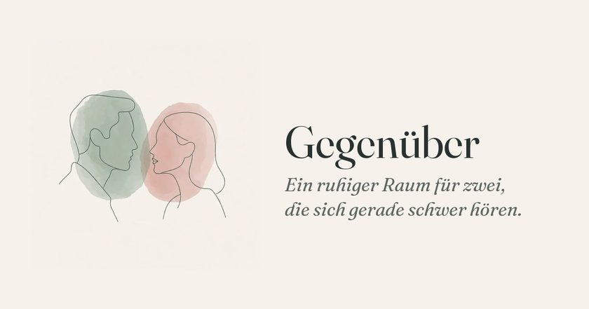
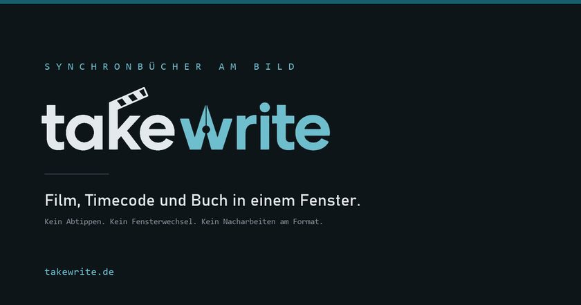
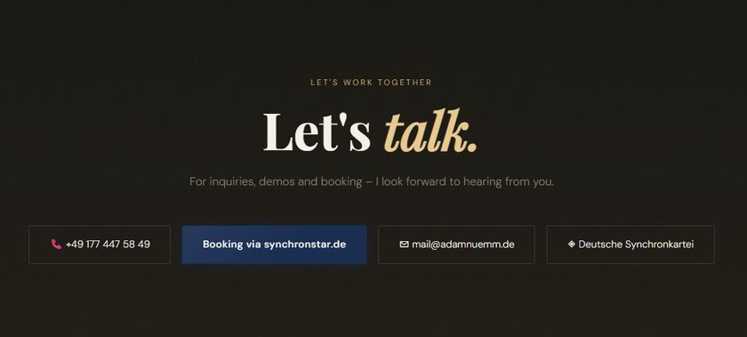
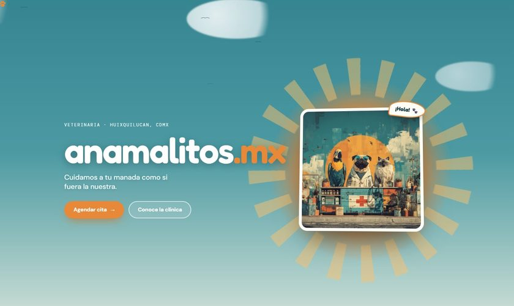
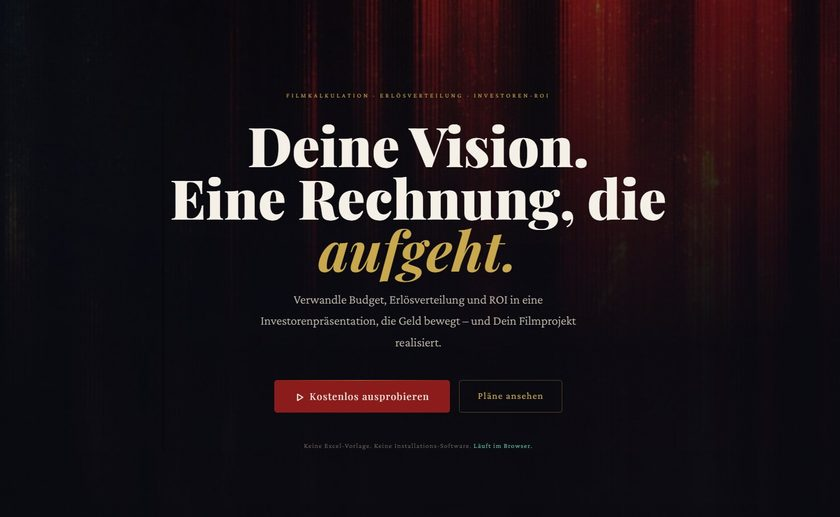
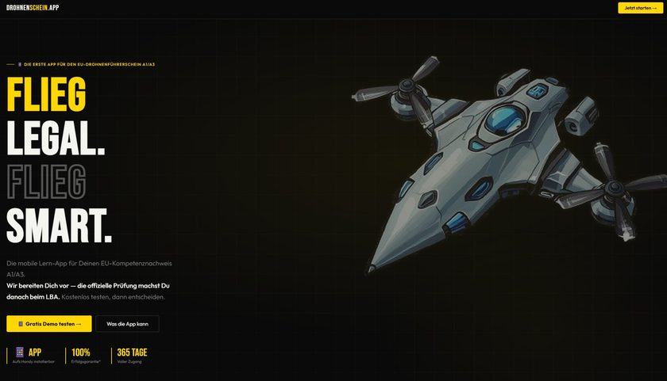
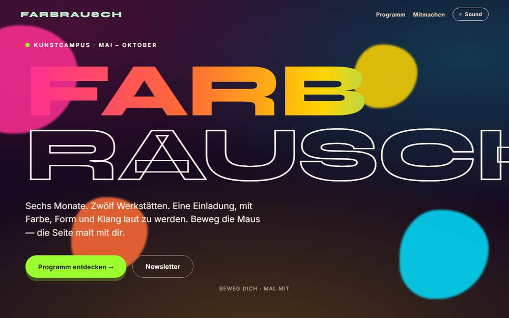
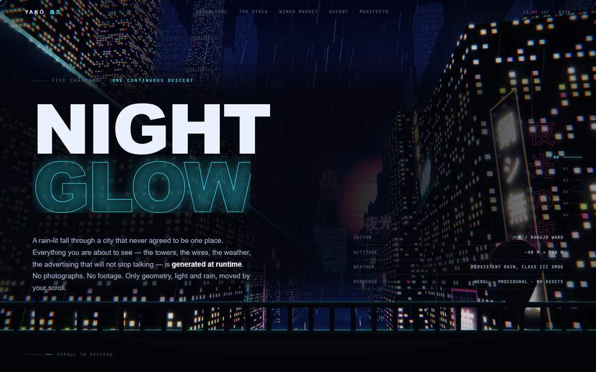

Kein Informatikstudium. Keine Angst vor Stack Overflow. Nur klares Denken, die richtigen KI-Werkzeuge und der Drang, Dinge wirklich fertig zu machen.
Softwareentwicklung hat lange den schnellsten Tipper belohnt. Damit ist es vorbei. Das Handwerk ist flussaufwärts gewandert — vom Codeschreiben zum Entwerfen von Systemen, von der Syntax zur Spezifikation, vom Ausführen zum Beaufsichtigen.
„Die Frage ist nicht, ob jemand sauberen Code schreiben kann. Die Frage ist: Kann er eine Spezifikation schreiben, die sauber genug ist, dass eine KI sie nicht missverstehen kann?"
— Axel Molist Cordina, CEO WeUCGenau das mache ich. Ich erkenne, was gebaut werden muss, zerlege es in Denkschritte, die eine KI bewältigt, und liefere funktionierende Produkte — schnell. Vibe Coding ist keine Abkürzung. Es ist die neue Architektur.
Echte Projekte. Echte Probleme. Echte Menschen. Jedes von der Idee bis zum fertigen Produkt.

gegenueber.app LiveEin stiller Raum für zwei. Jeder schreibt auf, was für ihn wahr ist, und die App spiegelt das Feld dazwischen zurück — ohne Partei zu ergreifen, und ohne dass einer sieht, welche Worte von wem kamen.

takewrite.de LiveEin Desktop-Werkzeug für Synchronbücher: Film, Timecode und Buch in einem Fenster. Geschrieben wird am laufenden Bild, Timecodes tippt niemand mehr von Hand — etwa die halbe Zeit pro Buch.

adamnuemm.de LivePortfolio- und Buchungsseite für einen professionellen deutschen Sprecher — direkte Anfragen, Demos und Synchronkartei-Links an einem Ort.

anamalitos.mx LiveWarmer, verspielter Webauftritt für eine Tierarztpraxis in Mexiko-Stadt — gebaut, damit ein Termin mühelos zustande kommt.

slatecalc.app LiveMacht aus Budgets, Erlösverteilung und Investorenrendite einen Pitch, der Geld bewegt — vollständig im Browser, ohne Tabellenkalkulation.

drohnenschein.app LiveDie erste App für den EU-Drohnenführerschein A1/A3 — Prüfungsvorbereitung fürs Handy mit 365-Tage-Vollzugang.
Jedes Tischtennisturnier in Deutschland an einem Ort — holt alle 18 Landesverbände aus click-TT in einen filterbaren Kalender mit Livekarte. Gebaut für einen Tischtennisvater, der keine Lust mehr hatte, achtzehn Websites abzuklappern.

farbrausch-kunstcampus DemoEine Konzeptstudie für einen Kunstcampus. Der Cursor malt über die Seite, ein Klangteppich lässt sich zuschalten, eine Fläche lädt zum Zeichnen ein — eine Antwort darauf, was eine Seite kann, außer Dinge zu beschreiben. Programm und Termine sind erfunden; es geht um das Gefühl.

yako DemoEin fünfteiliger nächtlicher Abstieg durch eine verregnete Megastadt, gesteuert allein vom Scrollen. Es steckt kein einziges Bild darin — jede Fassade, jedes Schild, jede Pfütze und das Hologramm entstehen beim Laden aus Rauschen auf einem Canvas. Eine HTML-Datei, kein Build.
Die meisten Repos, auch die noch unfertigen, liegen auf GitHub ↗
Du beschreibst das Problem. Ich komme mit etwas zurück, das funktioniert, online steht und Geld annehmen kann. Von der Spezifikation bis zum Start, ohne unnötigen Aufwand.
Du kennst dein Fach und machst jeden Tag etwas von Hand. Ich mache Software daraus — so wie Takewrite es für Synchronbücher getan hat.
Jemand, der dein Produkt durchdenkt, es spezifiziert und KI-fähig macht — mit oder ohne mich beim Bauen danach.
Willst du selbst so arbeiten? Ich bringe es dir bei — einzeln oder mit deinem Team, online oder vor Ort, auf Deutsch, Englisch, Spanisch oder Indonesisch. Sag mir, wo du hinwillst, und frag mich, was es kostet.
Sieben Produkte in einem Jahr, ins Mikrofon gesprochen statt getippt. Was das verändert hat, und warum Abwarten die teure Variante ist.
Du weißt es jetzt. Lass uns etwas bauen, bevor alle anderen aufholen.